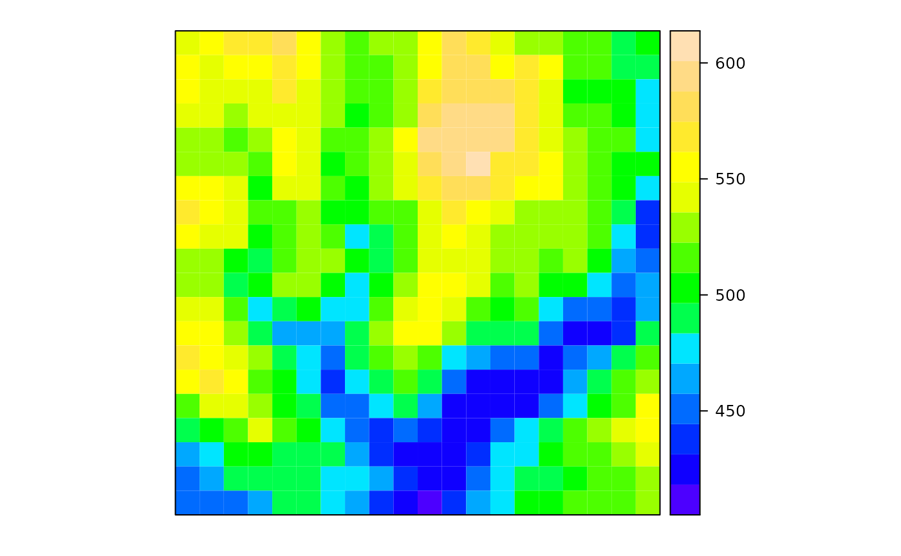
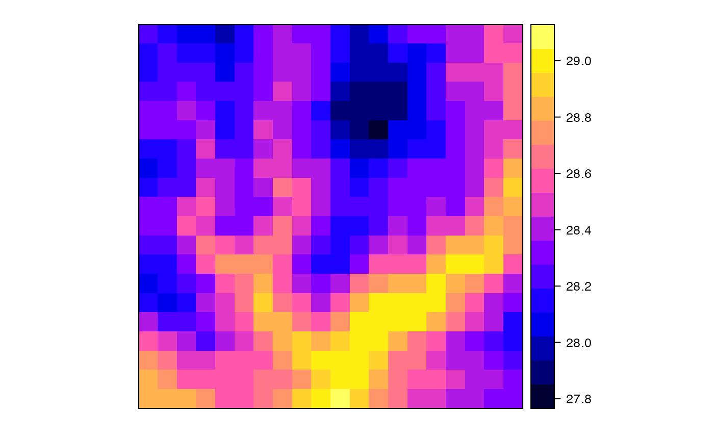
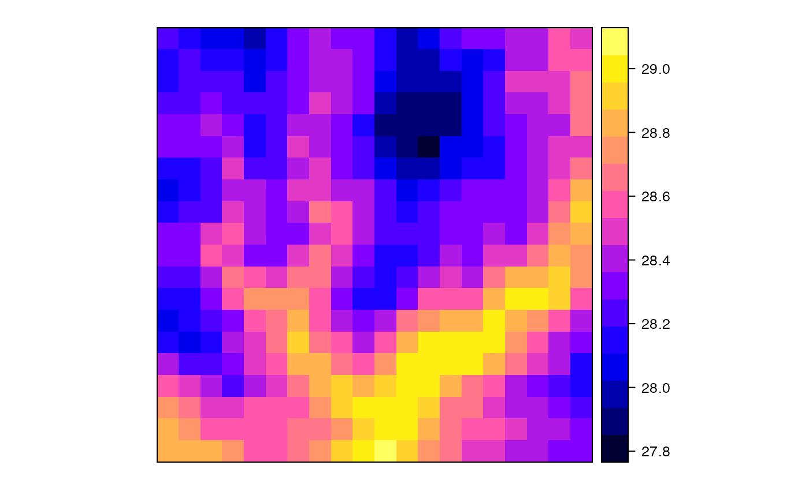
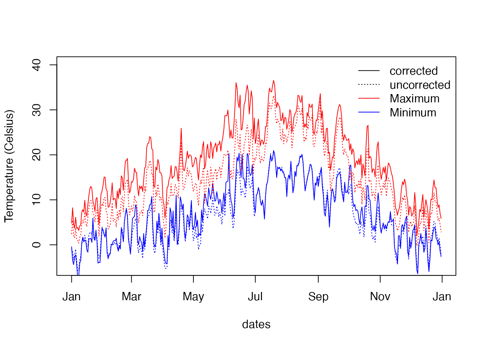
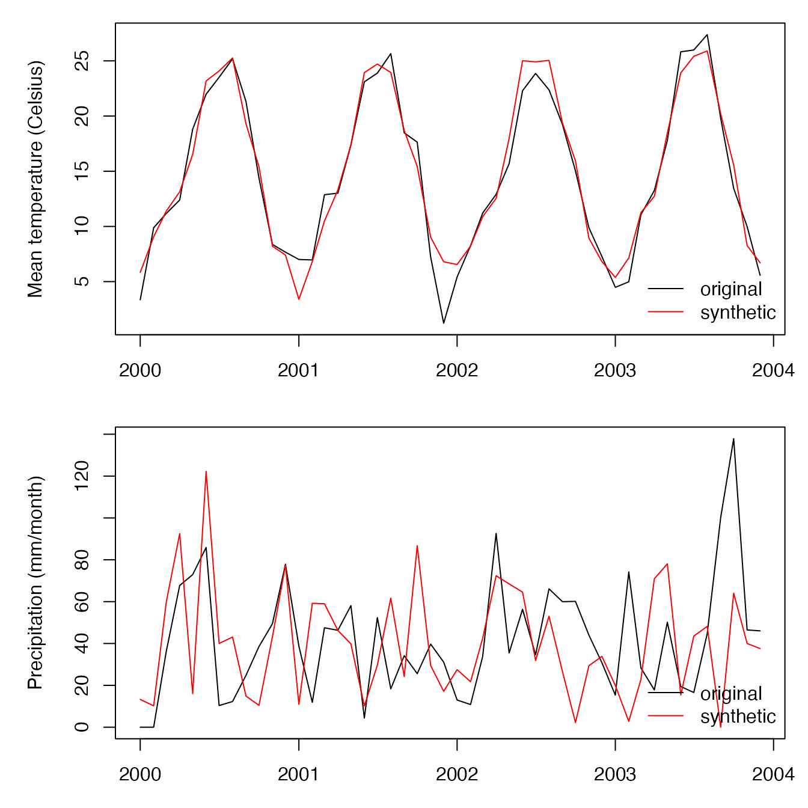

User guide to meteoland
Miquel De Cáceres, Victor Granda
2022-05-10
UserGuide.RmdIntroduction
Purpose
Reliable meteorological data are a basic requirement for hydrological and ecological studies at the landscape scale. Given the large spatial variation of meteorology over complex terrains, meteorological records from a single weather station are often not representative of entire landscapes. Studies made on multiple sites over a landscape require different meteorological series for each site; and other studies may require meteorological data series for all grid cells of a landscape, in a continuous way. In these cases, spatial correlation between the meteorology series of different sites or cells must be taken into account. For example, the sequence of days with rain of contiguous cells will normally be the same or very similar, even if precipitation amounts may differ. Finally, studies addressing the impacts of climate change on forests and landscapes require downscaling coarse-scale predictions of global or regional climate models to the landscape scale. When downscaling predictions for several locations in a landscape, spatial correlation of predictions is also important.
With the aim to assist research of climatic impacts on forests, the R package meteoland provides utilities to estimate daily weather variables at any position over complex terrains:
- Spatial interpolation of daily weather records from meteorological stations.
- Statistical correction of meteorological data series (e.g. from climate models).
- Multisite and multivariate stochastic weather generation.
Using meteoland package is easy, but some ideas and concepts must be addresed to make the experience easy for new users. This vignette is intended as a working example to explain all the steps needed to get comfortable with meteoland workflow. We assume that the reader is more or less familiar with S4 spatial classes of package sp. You will find detailed information regarding the package structure, its functions, and how calculations are done at the meteoland reference book.
Installing and loading the package
First of all, before starting to work with meteoland, we must install and load the library. Stable versions of the package can be found at CRAN (https://CRAN.R-project.org/package=meteoland), and it can be installed and loaded as any other R package:
install.packages("meteoland")
library(meteoland)Alternatively, you can install the development version located at GitHub using the devtools package:
Interpolation of daily weather
Spatial interpolation is required when meteorology for the area and period of interest cannot be obtained from local sensors. The nearest weather station may not have data for the period of interest or it may be located too far away to be representative of the target area.
Preparing weather data for interpolation
Before starting using the package, you need to have access to the elevation (in m) and daily weather data series corresponding a set of locations (normally weather stations). Elevation is needed because interpolation routines perform corrections for differences in elevation between the reference locations and the target point. The initial format of your data will be different depending on the format used by your data provider (the package has also tools to access weather data). For our example, we will assume you have data from a set of 38 stations in your study area. On one hand, you should have a data.frame with the coordinates and elevation of each location:
str(st_data)
#> 'data.frame': 38 obs. of 3 variables:
#> $ X_UTM : num 347104 358240 382829 350600 377232 ...
#> $ Y_UTM : num 4614634 4615380 4645816 4616925 4628439 ...
#> $ elevation: int 428 555 689 429 632 490 445 687 330 329 ...
head(st_data)
#> X_UTM Y_UTM elevation
#> C7 347104 4614634 428
#> C8 358240 4615380 555
#> CA 382829 4645816 689
#> VD 350600 4616925 429
#> VP 377232 4628439 632
#> W5 360730 4659875 490On the other, you should have at least three matrices of meteorological data (one for minimum temperature, one for maximum temperature and the last one for precipitation) with stations in rows and dates in columns. In our example we also add relative humidity (in percent), so that other derived variables can be calculated:
dim(tmax)
#> [1] 38 1461
dim(tmin)
#> [1] 38 1461
dim(prec)
#> [1] 38 1461
dim(rhum)
#> [1] 38 1461
tmax[1:6,1:6]
#> 2000-01-01 2000-01-02 2000-01-03 2000-01-04 2000-01-05 2000-01-06
#> C7 8.8 8.8 10.7 2.9 1.3 -0.2
#> C8 7.9 8.0 9.9 3.2 3.3 -0.4
#> CA 11.5 13.4 13.5 10.6 14.9 12.7
#> VD 7.4 8.0 9.3 2.8 1.4 -0.2
#> VP 4.8 8.1 8.9 2.3 9.0 -1.4
#> W5 NA NA NA NA NA NAUnits should be in degrees Celsius for temperature and mm for precipitation.
Building an interpolation data object
Package meteoland stores weather series for reference locations and interpolation parameters in a single object of class MeteorologyInterpolationData. There are several ways of building such objects, but we will first illustrate how to do it from the data we just presented.
First we need to create an object of class SpatialPoints (see package sp) with the spatial coordinates of our weather stations and the coordinate system (here UTM 31N):
sp = SpatialPoints(st_data[,c("X_UTM", "Y_UTM")],
proj4string = CRS(SRS_string = "EPSG:32631"))
head(sp)
#> class : SpatialPoints
#> features : 6
#> extent : 340188.4, 383993.6, 4612467, 4660422 (xmin, xmax, ymin, ymax)
#> crs : +proj=utm +zone=31 +datum=WGS84 +units=m +no_defsWe can now build an object MeteorologyInterpolationData using:
interpolator <- MeteorologyInterpolationData(sp, elevation = st_data$elevation,
MinTemperature = tmin,
MaxTemperature = tmax,
Precipitation = prec,
RelativeHumidity = rhum)
class(interpolator)
#> [1] "MeteorologyInterpolationData"
#> attr(,"package")
#> [1] "meteoland"The resulting object is ready to be used to perform interpolation on a set of target locations (see next section). We can inspect the amount of data in our interpolation object using function interpolation.coverage. For example, with:
spatial_coverage <- interpolation.coverage(interpolator, type = 'spatial')
head(spatial_coverage)
#> class : SpatialPointsDataFrame
#> features : 6
#> extent : 347104, 382829, 4614634, 4659875 (xmin, xmax, ymin, ymax)
#> crs : +proj=utm +zone=31 +datum=WGS84 +units=m +no_defs
#> variables : 7
#> names : MinTemperature, MaxTemperature, Precipitation, RelativeHumidity, Radiation, WindSpeed, WindDirection
#> min values : 1288, 1288, 1288, 0, 0, 0, 0
#> max values : 1461, 1461, 1461, 0, 0, 0, 0we obtain the number of non-missing observations for each weather station and variable (i.e. the spatial coverage). Similarly, we can ask the number of non-missing observations for each date and variable (i.e. the temporal coverage) using:
temporal_coverage <- interpolation.coverage(interpolator, type = 'temporal')
head(temporal_coverage)
#> MinTemperature MaxTemperature Precipitation RelativeHumidity
#> 2000-01-01 13 13 14 1
#> 2000-01-02 13 13 14 1
#> 2000-01-03 13 13 14 1
#> 2000-01-04 13 13 14 1
#> 2000-01-05 13 13 14 1
#> 2000-01-06 13 13 14 1
#> Radiation WindSpeed WindDirection
#> 2000-01-01 0 0 0
#> 2000-01-02 0 0 0
#> 2000-01-03 0 0 0
#> 2000-01-04 0 0 0
#> 2000-01-05 0 0 0
#> 2000-01-06 0 0 0Interpolation parameters are also stored in the same object (see next subsection):
names(interpolator@params)
#> [1] "initial_Rp" "iterations"
#> [3] "alpha_MinTemperature" "alpha_MaxTemperature"
#> [5] "alpha_DewTemperature" "alpha_PrecipitationEvent"
#> [7] "alpha_PrecipitationAmount" "alpha_Wind"
#> [9] "N_MinTemperature" "N_MaxTemperature"
#> [11] "N_DewTemperature" "N_PrecipitationEvent"
#> [13] "N_PrecipitationAmount" "N_Wind"
#> [15] "St_Precipitation" "St_TemperatureRange"
#> [17] "pop_crit" "f_max"
#> [19] "wind_height" "debug"Interpolation basics and parameters
Package meteoland implements, with a few modifications, the daily weather interpolation and estimation algorithms that un- derpin the U.S. DAYMET dataset (Thornton et al., 1997; Thornton and Running, 1999).This approach, similar to inverse distance weighting, interpolates weather variables using trun- cated Gaussian filters, which consist in defining spatial weights \(W(r)\) at radial distance \(r\) from a target point \(p\) using: \[\begin{equation} W(r) = e^{-\alpha \cdot (r/R_p)^2} - e^{-\alpha} \end{equation}\] if \(r \leq R_p\) and \(W(r) = 0\) otherwise.
Here \(r\) is the radial distance from \(p\), \(R_p\) is the truncation distance and \(\alpha\) is the shape parameter. The spatial convolution of this filter with a set of weather station locations results, for each target point, in a vector of weights associated with observations. The following figure illustrates the Gaussian filter for \(R_p = 500\) and either \(\alpha = 3.0\) (continuous line) or \(\alpha = 6.25\) (dashed line):
\(R_p\) is automatically adjusted so that it has lower values in data-rich regions and is increased in data-poor regions. The method, however, requires the user to specify \(N\), the average number of observations to be included for each target point. \(R_p\) is then varied as a smooth function of the local density in such a way that this average is achieved over the spatial domain. It is important that the initial value of \(R_p\)
In meteoland estimation of \(R_p\) is done once for each target point, variable and day. Interpolation of temperature includes a correction for the effects of elevation. More specifically, a weighted least-squares regression is used to assess the relationship between temperature differences and elevation differences in weather station data and this relationship is applied to elevation differences between weather stations and the target point. Interpolation of relative humidity is done after transforming it to dew-point temperature. No correction for elevation is performed during interpolation, but elevation effects arise when back-transforming dew-point temperature to relative humidity. Interpolation of daily precipitation is complicated by the need to predict both precipitation occurrence and, conditioned on this, precipitation amount. Thornton et al. (1997) defined a binomial predictor of spatial precipitation occurrence as a function of the weighted occurrence at surrounding weather stations. Conditional on precipitation occurrence, the interpolation routine predicts precipitation amount, where weighted least-squares regression is also used to account for elevation effects. Interpolation of wind is performed in three different ways depending on the information available. If only wind speed data is available, the spatial interpolation with Gaussian weights is used on wind scalars as described above. If weather station data includes wind direction, a polar average is cal- culated using Gaussian weights. Finally, if static wind fields are also available the interpolation routine first finds, for each weather station the wind field that best matches the observed vector. Then, the wind vectors extracted from the selected wind fields are averaged as before. Further details of how interpolation is done can be found at meteoland’s book.
Interpolation parameters \(\alpha\) and \(N\) can be different for each variable to be interpolated. The following table lists all the interpolation parameters (see also function defaultInterpolationParameters())
| Paremeter | Default value | Definition |
|---|---|---|
initial_Rp |
140000 | Initial truncation radius |
iterations |
3 | Number of station density iterations |
alpha_MinTemperature |
3.0 | Gaussian shape parameter for minimum temperature |
alpha_MaxTemperature |
3.0 | Gaussian shape parameter for maximum temperature |
alpha_DewTemperature |
3.0 | Gaussian shape parameter for dew-point temperature |
alpha_PrecipitationEvent |
5.0 | Gaussian shape parameter for precipitation events |
alpha_PrecipitationAmount |
5.0 | Gaussian shape parameter for the regression of precipitation amounts |
alpha_Wind |
3.0 | Gaussian shape parameter for wind |
N_MinTemperature |
30 | Average number of stations with non-zero weights for minimum temperature |
N_MaxTemperature |
30 | Average number of stations with non-zero weights for maximum temperature |
N_DewTemperature |
30 | Average number of stations with non-zero weights for dew-point temperature |
N_PrecipitationEvent |
5 | Average number of stations with non-zero weights for precipitation events |
N_PrecipitationAmount |
20 | Average number of stations with non-zero weights for the regression of precipitation amounts |
N_Wind |
2 | Average number of stations with non-zero weights for wind |
St_Precipitation |
5 | Number of days for the temporal smoothing of precipitation |
St_TemperatureRange |
15 | Number of days for the temporal smoothing of temperature range |
pop_crit |
0.50 | Critical precipitation occurrence parameter |
f_max |
0.6 | Maximum value for precipitation regression extrapolations (0.6 equals to a maximum of 4 times extrapolation) |
wind_height |
10 | Wind measurement height (in m) |
debug |
FALSE | Boolean flag to indicate extra console output |
Parameter St_Precipitation controls the temporal smoothing that is applied to weather station data to calibrate regression, while parameters pop_crit and f_max are also particular to the estimation of precipitation (see details in Thornton et al. 1997). Parameter St_TemperatureRange is used for the estimation of solar radiation.
A parameter that is particularly important to understand is initial_Rp, which specifies the initial radius for the truncated spatial Gaussian kernel. By default its value is:
interpolator@params$initial_Rp
#> [1] 25329.88The value of initial_Rp must be set in relation to the units of the spatial coordinates of weather data. Our data was in meters, so the default radius is 140 km. In general, the initial radius should be large enough to include a reasonable number of stations (~20-40), but the kernel radius is adjusted for each interpolation target point.
Calibration and cross-validation of the interpolation data
Once we already have weather stations data in shape, we can start calibrating the model in order to obtain the optimal parameters for the meteorological variables we want to interpolate. Parameter calibration has to be done for each variable separately. For example for minimum temperature:
tmin_cal <- interpolation.calibration(interpolator, variable = "Tmin",
N_seq = 20,
alpha_seq = seq(5, 10, by = 1),
verbose = TRUE)
#> Total number of stations: 38
#> Number of stations with available data: 15
#> Number of stations used for MAE: 15
#> Number of parameter combinations to test: 6
#>
#> Evaluation of parameter combinations...
#> N: 20 alpha: 5 MAE = 1.18623508801814
#> N: 20 alpha: 6 MAE = 1.18416517354223
#> N: 20 alpha: 7 MAE = 1.18359260839307
#> N: 20 alpha: 8 MAE = 1.18303735002687
#> N: 20 alpha: 9 MAE = 1.18191979076192
#> N: 20 alpha: 10 MAE = 1.18082343660302
#>
#> Minimum MAE value: 1.18082343660302 N: 20 alpha: 10This function returns an interpolation.calibration class object which contains several items:
- Numeric matrix with the mean absolute error (MAE) values for each combination of parameters \(N\) and \(\alpha\).
- Miminum value found for MAE.
- Value for the
Nparameter corresponding to the minumun MAE. - Value for the
alphaparameter corresponding to the minimum MAE. - Matrix with the observed values.
- Matrix with the predicted values for the optimum parameter combination.
The result of the calibration needs to be manually stored in the interpolation params:
interpolator@params$N_MinTemperature = tmin_cal$N
interpolator@params$alpha_MinTemperature = tmin_cal$alphaWe strongly recommend conducting calibration exercises at least once for each variable and each data set used as reference for interpolation, and more than once if periods differ in the number of stations available.
Before using the object for interpolations, we also need to assess its performance. This is done by cross-validation in function interpolation.cv:
#> Station #1 C7
#> Station #2 C8
#> Station #3 CA
#> Station #4 VD
#> Station #5 VP
#> Station #6 W5
#> Station #7 WA
#> Station #8 XT: No observations.
#> Station #9 9713
#> Station #10 9713A: No observations.
#> Station #11 9650X: No observations.
#> Station #12 0166: No observations.
#> Station #13 9717
#> Station #14 9717A
#> Station #15 9718C
#> Station #16 9712N: No observations.
#> Station #17 9712O
#> Station #18 9720N: No observations.
#> Station #19 9638E: No observations.
#> Station #20 9638: No observations.
#> Station #21 0130: No observations.
#> Station #22 9640: No observations.
#> Station #23 9649
#> Station #24 9649A: No observations.
#> Station #25 0133: No observations.
#> Station #26 0132: No observations.
#> Station #27 0131U
#> Station #28 9720X
#> Station #29 9720: No observations.
#> Station #30 9720A
#> Station #31 9647X: No observations.
#> Station #32 9718X: No observations.
#> Station #33 0166I: No observations.
#> Station #34 9648: No observations.
#> Station #35 9644: No observations.
#> Station #36 9645: No observations.
#> Station #37 9712: No observations.
#> Station #38 9712E: No observations.Cross-validation is perfomed by leave-one-out, which means that each target station is first removed from the data set and then the remaining stations are used to obtain interpolation estimates. In this way one maximizes the amount of information for estimates, while keeping them independent of the observed values in each station. The results of cross-validation can be inspected using a specific summary function:
summary(cv)
#> n r MAE sd.station.MAE
#> MinTemperature 20618 0.9711987 1.1808234 0.4504965
#> MaxTemperature 20616 0.9848303 1.0813712 0.5078724
#> TemperatureRange 20612 0.8486540 1.6104133 0.6126532
#> RelativeHumidity 0 NA NaN NA
#> Radiation 0 NA NaN NA
#> Station.rainfall 16 0.8714303 149.3438156 133.4677792
#> Station.rainfall.relative 16 NA 8.9551880 9.3741873
#> Station.precdays 16 -0.2911044 100.1875000 94.5686479
#> Station.precdays.relative 16 NA 29.7535299 29.4253402
#> Date.rainfall 728 0.9913120 4.7063335 NA
#> Date.rainfall.relative 728 NA 26.4131863 NA
#> Date.precstations 728 0.9783504 0.8502747 NA
#> Date.precstations.relative 728 NA 20.7017971 NA
#> sd.dates.MAE Bias sd.station.Bias
#> MinTemperature 0.4370359 0.24744730 0.8188687
#> MaxTemperature 0.4456374 -0.00178348 0.7216981
#> TemperatureRange 0.5369418 -0.24924824 1.1273182
#> RelativeHumidity NA NaN NA
#> Radiation NA NaN NA
#> Station.rainfall NA -66.05159025 192.2250286
#> Station.rainfall.relative NA -2.09791005 12.9893224
#> Station.precdays NA -31.06250000 136.4577926
#> Station.precdays.relative NA -0.64453281 42.5405481
#> Date.rainfall 8.1532830 -1.16157341 NA
#> Date.rainfall.relative 23.7087247 -14.29115571 NA
#> Date.precstations 0.8655726 -0.38049451 NA
#> Date.precstations.relative 23.7243708 -12.47190577 NA
#> sd.dates.Bias
#> MinTemperature 0.2263925
#> MaxTemperature 0.1699181
#> TemperatureRange 0.2795973
#> RelativeHumidity NA
#> Radiation NA
#> Station.rainfall NA
#> Station.rainfall.relative NA
#> Station.precdays NA
#> Station.precdays.relative NA
#> Date.rainfall 9.3437122
#> Date.rainfall.relative 32.4992556
#> Date.precstations 1.1524766
#> Date.precstations.relative 28.9177675Interpolation on a grid
The target for weather interpolation in meteoland can be a set of points, pixels or a whole grid. Again, the initial format of data can be very different. Here we assume you have a small grid of 400 (20x20) cells of 1ha in size, with elevation data in form of class SpatialGridDataFrame (see method read.asciigrid in package sp):
summary(elev)
#> Object of class SpatialGridDataFrame
#> Coordinates:
#> min max
#> s1 359950 361950
#> s2 4638950 4640950
#> Is projected: TRUE
#> proj4string :
#> [+proj=utm +zone=31 +datum=WGS84 +units=m +no_defs]
#> Grid attributes:
#> cellcentre.offset cellsize cells.dim
#> s1 360000 100 20
#> s2 4639000 100 20
#> Data attributes:
#> elevation
#> Min. :418.0
#> 1st Qu.:484.0
#> Median :518.0
#> Mean :511.3
#> 3rd Qu.:539.0
#> Max. :601.0Note that the coordinate reference system needs to be the same as that of interpolator, which in this case it is. Before performing the interpolation over this grid, we need to reshape this data in a class called SpatialGridTopography:
sgt = SpatialGridTopography(as(elev, "SpatialGrid"), elevation = elev$elevation,
proj4string = elev@proj4string)
sgt
#> Object of class SpatialGridTopography
#> Grid topology:
#> cellcentre.offset cellsize cells.dim
#> s1 360000 100 20
#> s2 4639000 100 20
#> Warning in proj4string(x): CRS object has comment, which is lost in output; in tests, see
#> https://cran.r-project.org/web/packages/sp/vignettes/CRS_warnings.html
#> Coordinate Reference System (CRS) arguments: +proj=utm +zone=31
#> +datum=WGS84 +units=m +no_defs
#>
#> Topography summary:
#> elevation slope aspect
#> Min. :418.0 Min. : 0.2265 Min. : 0.9392
#> 1st Qu.:484.0 1st Qu.: 5.7382 1st Qu.:100.8848
#> Median :518.0 Median : 8.8257 Median :156.2479
#> Mean :511.3 Mean : 9.4178 Mean :172.7948
#> 3rd Qu.:539.0 3rd Qu.:13.1438 3rd Qu.:242.3809
#> Max. :601.0 Max. :23.2798 Max. :347.0054As you can see in the result, meteoland has calculated for us slope and aspect (both in degrees) from elevation data. Objects of class SpatialGridTopography can be initialized with user input values for slope and aspect too, but meteoland has its own routines when this are missing]. Slope and aspect are important for radiation calculations, which also requires relative humidity data. We can display elevation over the grid using:
spplot(sgt, "elevation")
Before we call the interpolation routine, we need to define the dates (i.e. days) for which we want weather to be interpolated, for example:
Of course, we need to be sure that the interpolator object has data corresponding to this dates. We can check if there is any missing date using:
The name of interpolation functions depend on the target spatial structure. For grids we need to use function interpolationgrid:
ml <- interpolationgrid(interpolator, sgt, dates)
#> Warning in proj4string(grid): CRS object has comment, which is lost in output; in tests, see
#> https://cran.r-project.org/web/packages/sp/vignettes/CRS_warnings.html
#> Warning in proj4string(object): CRS object has comment, which is lost in output; in tests, see
#> https://cran.r-project.org/web/packages/sp/vignettes/CRS_warnings.html
#> Interpolating day '2001-02-03' (1/2) - done.
#> Interpolating day '2001-06-03' (2/2) - done.This function works processing each date at a time. Since calculations can take some time, the console output shows the progress. The output of the function is an object of class SpatialGridMeteorology:
ml
#> Object of class SpatialGridMeteorology
#> Dates: 2 (initial: 2001-02-03 final: 2001-06-03)
#> Grid topology:
#> cellcentre.offset cellsize cells.dim
#> s1 360000 100 20
#> s2 4639000 100 20
#> Warning in proj4string(x): CRS object has comment, which is lost in output; in tests, see
#> https://cran.r-project.org/web/packages/sp/vignettes/CRS_warnings.html
#> Coordinate Reference System (CRS) arguments: +proj=utm +zone=31
#> +datum=WGS84 +units=m +no_defsWe can display interpolated grids in a map using function spplot:
 

Objects of class SpatialGridMeteorology include a list of data frames, one per date. We can access the interpolated data for a given date using:
df_1 = ml@data[[1]]
head(df_1)
#> MeanTemperature MinTemperature MaxTemperature Precipitation
#> 1 6.727439 -1.307918 11.95175 0
#> 2 6.758216 -1.251034 11.96555 0
#> 3 6.820188 -1.136355 11.99325 0
#> 4 6.804245 -1.166117 11.98630 0
#> 5 6.881788 -1.022737 12.02103 0
#> 6 6.762238 -1.244088 11.96767 0
#> MeanRelativeHumidity MinRelativeHumidity MaxRelativeHumidity Radiation
#> 1 89.95225 63.26295 100 10.32495
#> 2 89.76196 63.20538 100 10.94896
#> 3 89.38017 63.09002 100 12.05186
#> 4 89.47821 63.11897 100 11.20718
#> 5 89.00246 62.97457 100 12.32252
#> 6 89.73713 63.19654 100 10.93832
#> WindSpeed WindDirection PET
#> 1 NA NA 1.360004
#> 2 NA NA 1.476079
#> 3 NA NA 1.682675
#> 4 NA NA 1.527714
#> 5 NA NA 1.738771
#> 6 NA NA 1.474797Some columns are missing (e.g. wind speed) because we did not include weather station data regarding these variables. If we wants to add grid coordinates to this data frame, we can use the spatial information stored in the ml object:
sgdf_1 = SpatialGridDataFrame(grid = ml@grid, data = ml@data[[1]], proj4string = ml@proj4string)
summary(sgdf_1)
#> Object of class SpatialGridDataFrame
#> Coordinates:
#> min max
#> s1 359950 361950
#> s2 4638950 4640950
#> Is projected: TRUE
#> proj4string :
#> [+proj=utm +zone=31 +datum=WGS84 +units=m +no_defs]
#> Grid attributes:
#> cellcentre.offset cellsize cells.dim
#> s1 360000 100 20
#> s2 4639000 100 20
#> Data attributes:
#> MeanTemperature MinTemperature MaxTemperature Precipitation
#> Min. :6.154 Min. :-2.3017 Min. :11.64 Min. :0
#> 1st Qu.:6.472 1st Qu.:-1.7266 1st Qu.:11.80 1st Qu.:0
#> Median :6.611 Median :-1.4829 Median :11.88 Median :0
#> Mean :6.591 Mean :-1.5153 Mean :11.86 Mean :0
#> 3rd Qu.:6.727 3rd Qu.:-1.2705 3rd Qu.:11.93 3rd Qu.:0
#> Max. :7.028 Max. :-0.7301 Max. :12.07 Max. :0
#>
#> MeanRelativeHumidity MinRelativeHumidity MaxRelativeHumidity Radiation
#> Min. :88.11 Min. :62.76 Min. :100 Min. : 4.49
#> 1st Qu.:89.95 1st Qu.:63.36 1st Qu.:100 1st Qu.: 9.60
#> Median :90.68 Median :63.58 Median :100 Median :10.99
#> Mean :90.81 Mean :63.64 Mean :100 Mean :10.98
#> 3rd Qu.:91.55 3rd Qu.:63.91 3rd Qu.:100 3rd Qu.:12.31
#> Max. :93.58 Max. :64.56 Max. :100 Max. :16.29
#>
#> WindSpeed WindDirection PET
#> Min. : NA Min. : NA Min. :0.292
#> 1st Qu.: NA 1st Qu.: NA 1st Qu.:1.215
#> Median : NA Median : NA Median :1.473
#> Mean :NaN Mean :NaN Mean :1.466
#> 3rd Qu.: NA 3rd Qu.: NA 3rd Qu.:1.716
#> Max. : NA Max. : NA Max. :2.399
#> NA's :400 NA's :400Results can be retrieved in this way and saved using write.asciigrid for its use outside R. The package also provides function for reading/writing NetCDFs (see function writemeteorologygrid) from SpatialGridMeteorology objects. Finally, the package allows interpolating on subsets of grid pixels in the same way as for full grids. This is done using objects of class SpatialPixelsTopography and calling function interpolationpixels, which will produce objects of class SpatialPixelsMeteorology.
Interpolation on a set of points
If you want to interpolate on a set of target locations, the starting point will normally be a data.frame. In our example this points come from the grid, but we have reshaped them so the starting format is familiar:
points_df
#> X_UTM Y_UTM elevation
#> 1 363500 4640900 524
#> 2 362700 4640700 509
#> 3 362900 4640400 544
#> 4 360300 4638600 425Analogously with the grid, we need to transform this data into an object SpatialPointsTopography:
spt = SpatialPointsTopography(as.matrix(points_df[,c("X_UTM", "Y_UTM")]),
elevation = points_df$elevation,
proj4string = CRS(SRS_string = "EPSG:32631"))
spt
#> Object of class SpatialPointsTopography
#> coordinates elevation slope aspect
#> 1 (363500, 4640900) 524 NA NA
#> 2 (362700, 4640700) 509 NA NA
#> 3 (362900, 4640400) 544 NA NA
#> 4 (360300, 4638600) 425 NA NAIn this case we only have elevation (in m), but slope and aspect should also be included if possible. Let us assume you want to interpolate on this points for the whole time series available in object interpolator. Since we are dealing with points, the function to interpolate is called interpolationpoints:
mp = interpolationpoints(interpolator, spt)
#> Processing point '1' (1/4) - done.
#> Processing point '2' (2/4) - done.
#> Processing point '3' (3/4) - done.
#> Processing point '4' (4/4) - done.This function works processing one point at a time. The output of the function is an object of class SpatialPointsMeteorology:
mp
#> Object of class SpatialPointsMeteorology
#> Dates: 1461 (initial: 2000-01-01 final: 2003-12-31)
#> SpatialPoints:
#> X_UTM Y_UTM
#> 1 363500 4640900
#> 2 362700 4640700
#> 3 362900 4640400
#> 4 360300 4638600
#> Warning in proj4string(x): CRS object has comment, which is lost in output; in tests, see
#> https://cran.r-project.org/web/packages/sp/vignettes/CRS_warnings.html
#> Coordinate Reference System (CRS) arguments: +proj=utm +zone=31
#> +datum=WGS84 +units=m +no_defsAnd the time series for a given can be plotted using function meteoplot. For example, we show here the precipitation series of point #1:
meteoplot(mp, 1, "Precipitation", ylab="Precipitation (mm)", xlab="")Objects of class SpatialPointsDataFrame include a list of data frames, one per point. We can access one of them using:
df_1 = mp@data[[1]]
head(df_1)
#> DOY MeanTemperature MinTemperature MaxTemperature Precipitation
#> 2000-01-01 1 4.667837 -0.8252117 8.239225 0
#> 2000-01-02 2 5.334345 -0.8924180 9.382768 0
#> 2000-01-03 3 5.606611 -1.5197999 10.239954 0
#> 2000-01-04 4 2.763230 -1.3546669 5.440543 0
#> 2000-01-05 5 2.995939 -1.1467554 5.689375 0
#> 2000-01-06 6 1.688713 -1.9995148 4.086670 0
#> MeanRelativeHumidity MinRelativeHumidity MaxRelativeHumidity
#> 2000-01-01 92.03571 71.94077 100
#> 2000-01-02 90.39316 68.51070 100
#> 2000-01-03 89.10742 64.97937 100
#> 2000-01-04 87.49645 72.48081 100
#> 2000-01-05 80.59832 66.71599 100
#> 2000-01-06 82.71424 69.75940 100
#> Radiation WindSpeed WindDirection PET
#> 2000-01-01 1.710418 NA NA 0
#> 2000-01-02 1.629020 NA NA 0
#> 2000-01-03 1.562103 NA NA 0
#> 2000-01-04 1.956813 NA NA 0
#> 2000-01-05 1.953674 NA NA 0
#> 2000-01-06 2.082327 NA NA 0This data frame can now be written into a file for its analysis outside R. The package also provides its own functions to write/read point meteorology data in different formats. If we are interested in inspecting the interpolation result by date, instead of by point, we can use function extractdates, which returns objects of class SpatialGridDataFrame:
dt_4 = extractdates(mp, as.Date("2001-01-04"), verbose = FALSE)
dt_4
#> class : SpatialPointsDataFrame
#> features : 4
#> extent : 360300, 363500, 4638600, 4640900 (xmin, xmax, ymin, ymax)
#> crs : +proj=utm +zone=31 +datum=WGS84 +units=m +no_defs
#> variables : 12
#> names : DOY, MeanTemperature, MinTemperature, MaxTemperature, Precipitation, MeanRelativeHumidity, MinRelativeHumidity, MaxRelativeHumidity, Radiation, WindSpeed, WindDirection, PET
#> min values : 4, 8.78390001164907, 4.11764313108837, 11.7897135433592, 2.09405984093962, 81.0279519651087, 65.2038379982684, 100, 2.32716150233968, NA, NA, 0
#> max values : 4, 9.16098714429644, 4.160745188765, 12.4242756666988, 2.19374909000861, 83.1189540649279, 67.9874264275725, 100, 2.34506151418882, NA, NA, 0Statistical correction of daily weather
Correcting the biases of a meteorological data series containing biases using a more accurate meteorological series is necessary when the more accurate series does not cover the period of interest and the less accurate series does. The less accurate series may be at coarser scale, as with climate model predictions or climate reanalysis data. In this case one can speak of statistical correction and downscaling. However, one may also correct the predictions of climate models using reanalysis data estimated at the same spatial resolution.
In the following example we will correct the predictions of Regional Climate Model (CCLM4-8-17; driving global model CNRM-CERFACS-CNRM-CM5) on the same area of the interpolation example. RCM data includes 3 model cells. Meteorological data covers an historical (reference) period (2000-2003) and a future (projection) period (year 2023), the latter simulated under rcp4.5 scenario.
Preparing weather data to be downscaled/corrected
One needs several data items to perform downscaling and statistical correction. First, we need a matrix or data frame with the central coordinates of the RCM cells (here in longitude/latitude format):
pt_coords
#> long lat
#> 1 1.226384 41.79279
#> 2 1.368943 41.81727
#> 3 1.335890 41.92448Second, we need the uncorrected meteorological data (here RCM outputs) for both a reference period (that will be matched with our more accurate series) and a projection period (that our more accurate series does not cover). Both should be arranged in lists of data frames, one per RCM cell:
length(ref_data)
#> [1] 3
length(proj_data)
#> [1] 3
head(ref_data[[1]])
#> DOY MeanTemperature MinTemperature MaxTemperature Precipitation
#> 2000-01-01 1 7.008813 5.613855 9.692926 2.273821e-01
#> 2000-01-02 2 7.628625 6.728754 8.123132 1.979953e+01
#> 2000-01-03 3 7.204065 3.538507 9.701288 4.990360e+00
#> 2000-01-04 4 4.317285 1.941400 8.395471 0.000000e+00
#> 2000-01-05 5 4.235284 1.565973 8.663568 1.820105e-09
#> 2000-01-06 6 4.464075 2.094171 7.982202 2.747191e-03
#> SpecificHumidity MeanRelativeHumidity Radiation WindSpeed
#> 2000-01-01 0.005365001 87.24593 6.479796 5.300286
#> 2000-01-02 0.006007533 93.63294 2.333908 4.713901
#> 2000-01-03 0.005704192 91.52707 4.233040 2.108916
#> 2000-01-04 0.004497202 88.16652 6.957025 1.168019
#> 2000-01-05 0.004520838 89.14193 6.588341 1.993287
#> 2000-01-06 0.004539691 88.08730 6.849565 1.955944
head(proj_data[[1]])
#> DOY MeanTemperature MinTemperature MaxTemperature Precipitation
#> 2023-01-01 1 0.52730713 -0.9837708 1.922754 5.914489e-10
#> 2023-01-02 2 2.08501587 -1.0495361 6.185968 2.419252e-01
#> 2023-01-03 3 -0.76285400 -3.2190002 2.428308 1.936977e-12
#> 2023-01-04 4 0.02242432 -1.7950195 1.537469 1.174330e-01
#> 2023-01-05 5 1.30117188 -1.0007385 3.657709 3.518532e+00
#> 2023-01-06 6 -1.27564087 -3.2251038 1.087396 1.464739e-09
#> SpecificHumidity MeanRelativeHumidity Radiation WindSpeed
#> 2023-01-01 0.003752435 96.40739 6.263537 1.353957
#> 2023-01-02 0.003748596 86.08917 5.417012 2.057226
#> 2023-01-03 0.003032080 85.58024 7.274775 1.688474
#> 2023-01-04 0.003270915 87.17539 3.522371 1.115798
#> 2023-01-05 0.003813237 92.64220 5.621084 1.008287
#> 2023-01-06 0.003074167 90.09795 7.251414 1.606562Note that these data frames should follow the conventions of meteoland for variable names and units. Finally, we need to specify the projection period, in this case one year:
Building the uncorrected data object
Statistical correction needs an object of class MeteorologyUncorrectedData, analogous to the MeteorologyInterpolationData of the previous section. To build this object we need first to express coordinates in an object SpatialPoints:
sp = SpatialPoints(pt_coords, CRS(SRS_string = "EPSG:4326"))
sp
#> class : SpatialPoints
#> features : 3
#> extent : 1.226384, 1.368943, 41.79279, 41.92448 (xmin, xmax, ymin, ymax)
#> crs : +proj=longlat +datum=WGS84 +no_defsAssuming the weather data to be corrected is in the proper format, the object is constructed using:
uncorrected = MeteorologyUncorrectedData(sp, ref_data, proj_data, proj_dates)Target point weather meteorology taken as reference
Downscaling/statistical correction is done on a set of target spatial points. meteoland will first find the RCM cell to which each point is nearest (using the central coordinates of RCM cells). Once this matching is done, statistical relations are build between the meteorology of RCM cells and that of target points for the reference period (here 2000-2003) which are used to correct RCM data for the projection period (year 2023). For this process to be done, we need the coordinates and weather series for the reference period. In our case, we will employ a copy the object of class SpatialPointsMeteorology that resulted from interpolation in the previous section:
historical = mp
historical
#> Object of class SpatialPointsMeteorology
#> Dates: 1461 (initial: 2000-01-01 final: 2003-12-31)
#> SpatialPoints:
#> X_UTM Y_UTM
#> 1 363500 4640900
#> 2 362700 4640700
#> 3 362900 4640400
#> 4 360300 4638600
#> Warning in proj4string(x): CRS object has comment, which is lost in output; in tests, see
#> https://cran.r-project.org/web/packages/sp/vignettes/CRS_warnings.html
#> Coordinate Reference System (CRS) arguments: +proj=utm +zone=31
#> +datum=WGS84 +units=m +no_defsWe named it historical to remind that we are using the historical period as reference and want to correct the RCM series for the projection period There are several ways to shape data into objects of class SpatialPointsMeteorology. For example, one can use function readmeteorologypoints.
Tuning correction parameters
Objects of class MeteorologyUncorrectedData have a slot with parameters:
uncorrected@params
#> $varmethods
#> $varmethods$MeanTemperature
#> [1] "unbias"
#>
#> $varmethods$MinTemperature
#> [1] "quantmap"
#>
#> $varmethods$MaxTemperature
#> [1] "quantmap"
#>
#> $varmethods$Precipitation
#> [1] "quantmap"
#>
#> $varmethods$MeanRelativeHumidity
#> [1] "unbias"
#>
#> $varmethods$Radiation
#> [1] "unbias"
#>
#> $varmethods$WindSpeed
#> [1] "quantmap"
#>
#>
#> $qstep
#> [1] 0.01
#>
#> $fill_wind
#> [1] TRUE
#>
#> $allow_saturated
#> [1] FALSE
#>
#> $wind_height
#> [1] 10Importantly, varmethods is a named list that specifies which correction method has to be used for each variable. Since we do not have reference data for wind speed, we must turn the method for wind speed to "none":
uncorrected@params$varmethods$WindSpeed="none"Conducting statistical correction
Once we have all the data objects that we need (the hard part), conducting statistical correction is straightforward:
projected = correctionpoints(uncorrected, historical)
#> Points to correct: 4
#> All points inside boundary box.
#> Correcting point '1' (1/4) - ipred = 3 done.
#> Correcting point '2' (2/4) - ipred = 3 done.
#> Correcting point '3' (3/4) - ipred = 3 done.
#> Correcting point '4' (4/4) - ipred = 3 done.As mentioned above, correction proceeds point by point. The result is again an object of class SpatialPointsMeteorology:
projected
#> Object of class SpatialPointsMeteorology
#> Dates: 365 (initial: 2023-01-01 final: 2023-12-31)
#> SpatialPoints:
#> X_UTM Y_UTM
#> 1 363500 4640900
#> 2 362700 4640700
#> 3 362900 4640400
#> 4 360300 4638600
#> Warning in proj4string(x): CRS object has comment, which is lost in output; in tests, see
#> https://cran.r-project.org/web/packages/sp/vignettes/CRS_warnings.html
#> Coordinate Reference System (CRS) arguments: +proj=utm +zone=31
#> +datum=WGS84 +units=m +no_defsThe following code displays the minimum/maximum temperatures before and after correction:
#Plot predicted mean temperature for point 1
meteoplot(projected, 1, "MinTemperature", ylab="Temperature (Celsius)", ylim=c(-5,40), col="blue")
meteoplot(projected, 1, "MaxTemperature", add=TRUE, col="red")
#Add uncorrected mean temperature data (cell #3)
lines(uncorrected@dates,
uncorrected@projection_data[[3]]$MinTemperature,
col="blue", lty=3)
lines(uncorrected@dates,
uncorrected@projection_data[[3]]$MaxTemperature,
col="red", lty=3)
legend("topright", legend=c("corrected","uncorrected", "Maximum", "Minimum"),
col=c("black","black", "red","blue"), lty=c(1,3,1,1), bty="n")
Stochastic weather generation
Recent versions of meteoland incorporate the possibility of generating stochastic weather series. Stochastic weather generators are algorithms that produce series of synthetic daily weather data. The parameters of the model are conditioned on existing meteorological records to ensure the characteristics of input weather series emerge in the daily stochastic process. The algorithm available in meteoland is intended to be used to generate daily series of the same length as the input. It can be understood as a resampling algorithm that tries to preserve some properties of the input series. The algorithm is semi-parametric and based on a first-order Markov chain for weather days (classified into dry/wet/extreme wet) along with k-nearest neighbour (KNN) resampling of input days and years. The approach implemented in meteoland can be applied to any spatial structure (points/pixels/grid) and it preserves the spatial correlation and multivariate covariance structure of weather series (because it works on area-averaged weather and the chosen resampled days are applied to all points/pixels).
Weather generation function
Function weathergeneration can be used to generate synthetic weather series for a range of inputs, including a (non-spatial) data frame (corresponding to weather series of a single location) as well as objects of classes SpatialPointsDataFrame, SpatialPixelsDataFrame or SpatialGridDataFrame. The following calls the function with a SpatialPointsDataFrame object, while hiding console output:
y <- weathergeneration(mp, verbose=FALSE)The output of the function is of the same class as the input object:
class(y)
#> [1] "SpatialPointsMeteorology"
#> attr(,"package")
#> [1] "meteoland"We use the following code to display the original and synthetic temperature and precipitation values at the monthly scale:
par(mar=c(3,5,1,1), mfrow = c(2,1))
meteoplot(mp, 1, "MeanTemperature", freq="months", fun="mean", ylab="Mean temperature (Celsius)", xlab="")
meteoplot(y, 1, "MeanTemperature", freq="months", fun="mean", col="red", add=T)
legend("bottomright", legend = c("original", "synthetic"), col=c("black", "red"), lty=1, bty="n")
meteoplot(mp, 1, "Precipitation", freq="months", fun="sum", ylab="Precipitation (mm/month)", xlab="")
meteoplot(y, 1, "Precipitation", freq="months", fun="sum", col="red", add=T)
legend("bottomright", legend = c("original", "synthetic"), col=c("black", "red"), lty=1, bty="n")
Weather generation parameters
One of the inputs of function weathergeneration is an list with algorithm parameters. The names of these parameters, and their default values, can be obtained from function defaultGenerationParameters():
defaultGenerationParams()
#> $conditional
#> [1] "none"
#>
#> $dry_wet_threshold
#> [1] 0.3
#>
#> $wet_extreme_quantile_threshold
#> [1] 0.8
#>
#> $n_knn_annual
#> [1] 100
#>
#> $adjust_annual_precip
#> [1] TRUE
#>
#> $range_size_days
#> [1] 5
#>
#> $range_size_years
#> [1] 12
#>
#> $min_ratio
#> [1] 0.7
#>
#> $max_ratio
#> [1] 1.3Among all parameters, the most important is $conditional, as it specifies the multiyear conditioning of the generated series:
- “none” - The non-conditional version is used, which is based on a first order Markov chain (MC) to simulate weather states (dry/wet/extreme wet) and a K-nearest neighbour (KNN) algorithm to select pairs of days with the same transition and similar weather for the initial state (as in Apipattanavis et al. 2007).
- “arima” - Annual precipitation is conditioned using a stationary auto-regressive (ARIMA) model and then a K-nearest neighbour algorithm is used to select a set of years to train the MC-KNN algorithm (similar to Steinschneider et al. 2013). Recommended if low-frequency variation of annual precipitation is to be acounted for in long series.
- “window” - The MC-KNN algorithm is trained with the subset of the input data corresponding to a window around the target year. Annual precipitation is conditioned using a lognormal random trial of the precipitation corresponding to the selected years. Recommended to generate stochastic series from climate change projections.